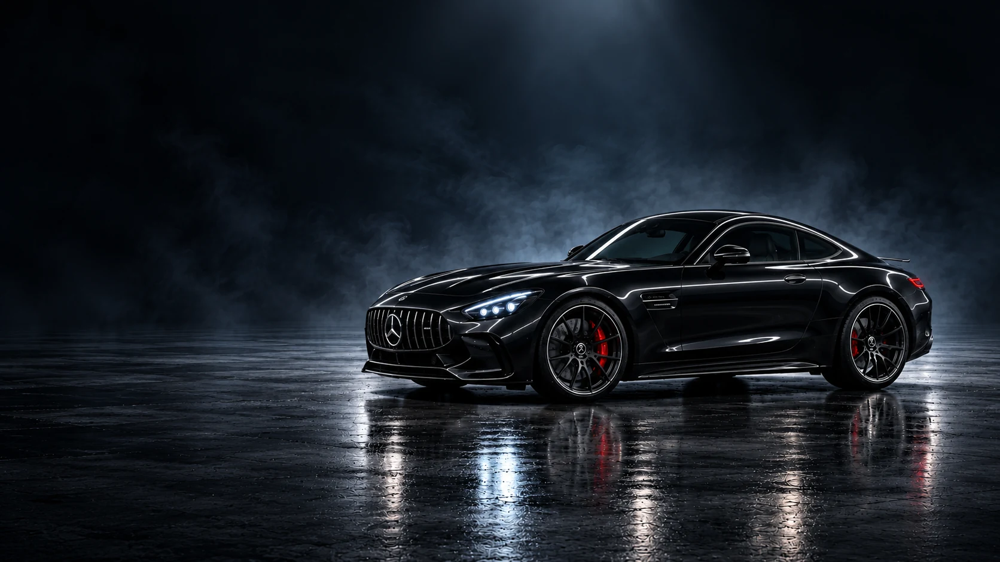

SANA ÖZEL BİR PRÖMİYER
Gecenin sahibi.Sensin.
Bir otomobil. Üç atmosfer.
Geriye senin imzan kalır.
Döndürmek için aracı sürükle. Yaklaşmak için iki parmağını kullan.
Mercedes-AMG GT · Konsept
Görsel deneyim

SANA ÖZEL BİR PRÖMİYER
Bir otomobil. Üç atmosfer.
Geriye senin imzan kalır.
Döndürmek için aracı sürükle. Yaklaşmak için iki parmağını kullan.